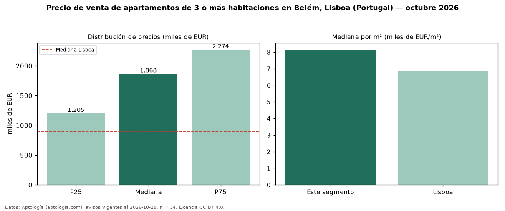

Precio de venta de apartamentos de 3 o más habitaciones en Belém, Lisboa (Portugal) — octubre 2026
En Belém, Lisboa (Portugal), la mediana de precio de venta de apartamentos de 3 o más habitaciones es EUR 1,87 millones, según 34 avisos vigentes. Eso es 108 % por encima de la mediana de Lisboa para apartamentos de 3 o más habitaciones (EUR 900.000). Por metro cuadrado, la mediana es EUR 8.153/m² (n = 34 avisos con área), 19 % por encima de Lisboa (EUR 6.878/m²). Son 83 % de los 41 avisos de apartamentos en venta de la zona, cuya mediana general es EUR 1,50 millones (+25 %). El área mediana anunciada es 244 m². La mitad central de los avisos va de EUR 1,21 millones a EUR 2,27 millones (razón 1,9), una dispersión moderada. 88 % de los avisos con el dato declara parqueadero o cochera. Datos: Aptología (aptologia.com), CC BY 4.0 — https://www.aptologia.com/pt/venda/lisboa. Archivos: PDF, CSV con las cifras y gráfica PNG.

| Avisos únicos | 34 |
|---|---|
| Percentil 25 | COP 1.205.000 |
| Mediana | COP 1.867.500 |
| Percentil 75 | COP 2.273.750 |
| Mediana por m² | COP 8.152 |
Fuente: avisos vigentes de portales inmobiliarios recopilados por Aptología, deduplicados (mínimo 30 avisos únicos por celda). Precios pedidos, no cerrados. Fecha: 2026-10-18.